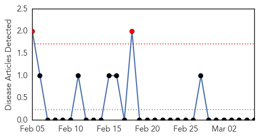
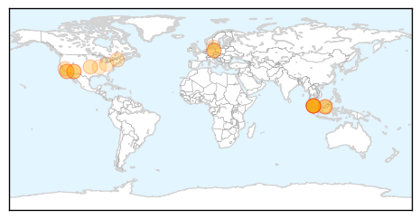

Yellow Fever
30-Day Web Trend
2 alerts, 0 warnings

30-Day Twitter Trend
0 alerts, 0 warnings

Article Locations

Article Confidences

Top Articles:
-
No articles found for Mar 06, 2015
Top Tweets:
-
No tweets found for Mar 06, 2015
Measles
30-Day Web Trend
0 alerts, 3 warnings

30-Day Twitter Trend
0 alerts, 0 warnings

Article Locations
Article Confidences

Top Articles:
- 0.985
- Berlin counts 254 new cases of measles in 2015
- 0.963
- Health Ministry Bracing to Contain Measles Breakout – The Yeshiva World
- 0.952
- Small world, giant petri dish
- 0.943
- CUSD reacts amid vaccine decline, measles outbreak
- 0.909
- Prevention the Key to Keeping Measles Out of Indian Country
- 0.862
- The facts on getting a measles booster
- 0.841
- Aliso Niguel High School
- 0.836
- Confirmed Case of Measles - Auckland
- 0.800
- OPINION: Return of the Vaccine Juggernaut
- 0.782
- Measles case on flight from Kuala Lumpur to Auckland
- 0.782
- Measles case in Auckland: Malaysian Airlines flight passengers being traced
- 0.777
- Confirmed case of measles in Auckland
- 0.772
- Kiwi plane passengers exposed to measles
- 0.757
- Officials track passengers exposed to measles
- 0.677
- Measles confirmed on Auckland flight
- 0.677
- Measles confirmed on Auckland flight
- 0.676
- Measles risk in Auckland
- 0.676
- Measles risk in Auckland
- 0.662
- More adults need to be vaccinated against measles, warn healthcare professionals
- 0.638
- Ohio State will require students to be vaccinated
- 0.618
- Locals share mild worries about issue
- 0.609
- Infant death sparks measles jab debate
- 0.566
- Public takes advantage of free measles vaccination
Top Tweets:
-
No tweets found for Mar 06, 2015